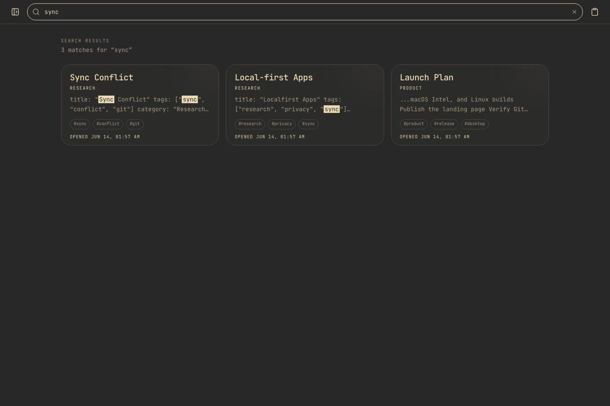
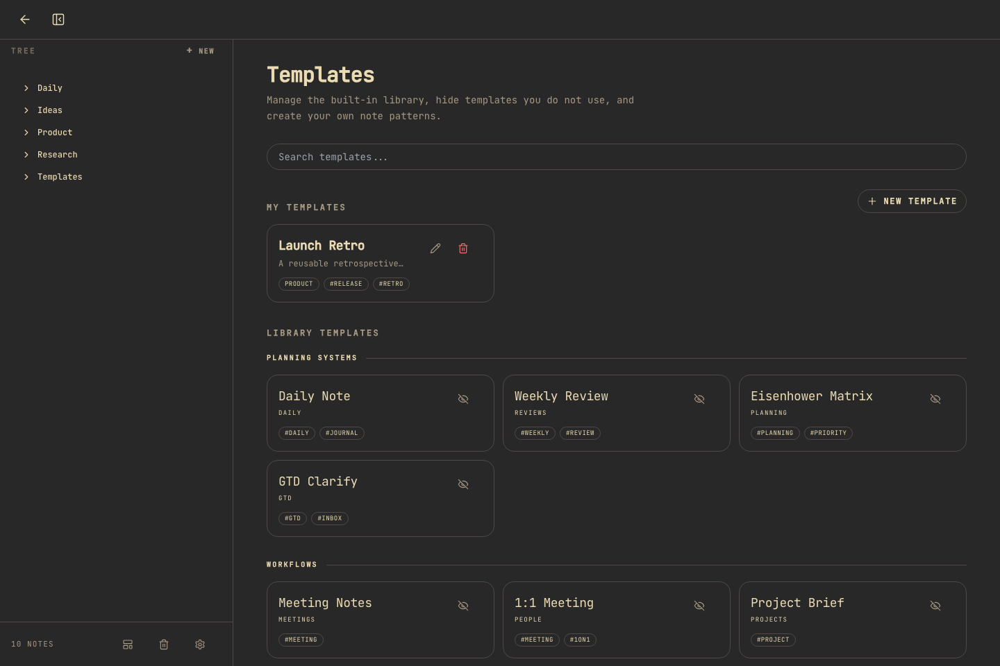
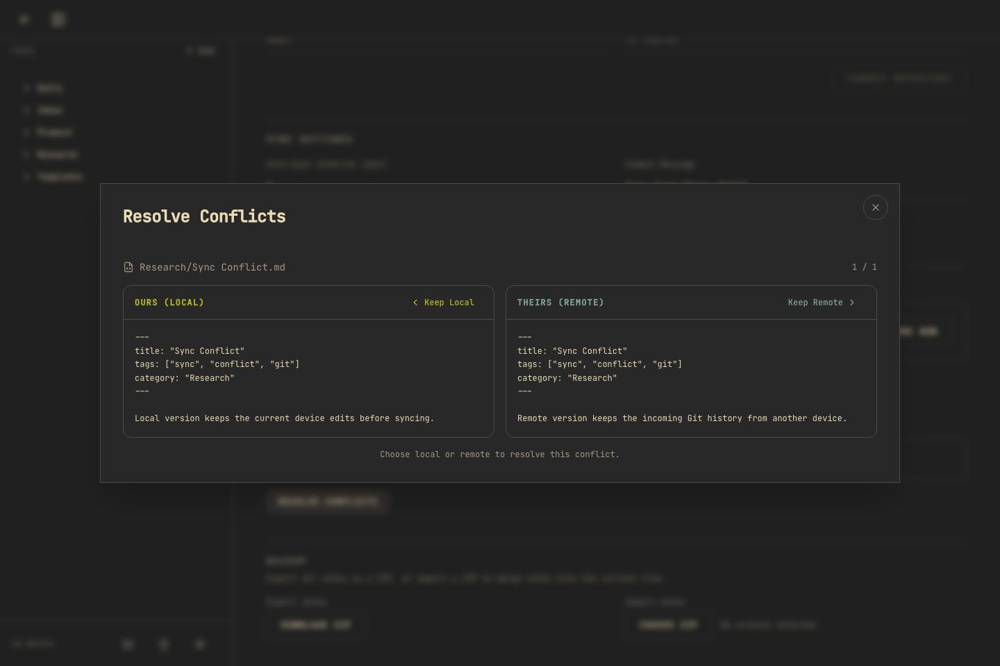
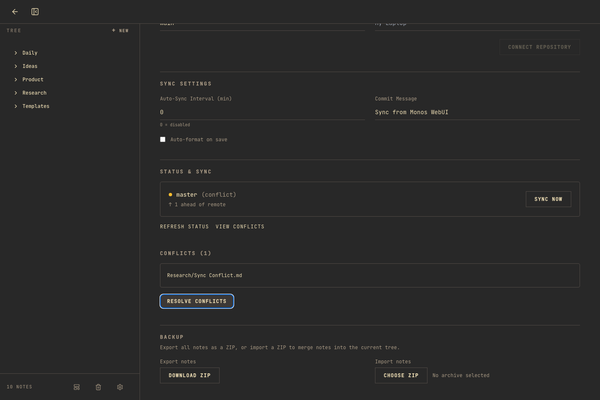

Open notes in any editor, version them in Git, or archive them as files. No proprietary lock-in.
Local-first notes with real recovery paths
A calm notes app that does not trap your knowledge.
Monos keeps notes as Markdown files, gives them a polished desktop workspace, and adds the safety net people usually miss: ZIP backup, import merge, Git history, and conflict resolution when devices disagree.
macOS Apple Silicon
macOS Intel
Windows
Ubuntu / Linux
Portable
Markdown files remain usable outside Monos. The database is only a fast, rebuildable index.
Recoverable
Trash, ZIP export, merge import, and Git sync give multiple ways back from mistakes.
Focused
A compact board, rich editor, templates, color cues, and backlinks keep writing direct.

The strengths are ownership, speed, and recovery.
The product is not just another editor. It is a local-first workflow for writing, connecting, backing up, restoring, and moving notes without giving up plain files.
Write in a calm TipTap editor, keep Markdown on disk, and use source mode when you need it.
Connect notes with `[[links]]`, drag notes into the editor, and jump through local backlinks.
A compact dashboard helps you scan recent notes, group by color, and create new notes quickly.
Search titles, tags, and body content with highlighted matches.
Use your own repository for backup and history, with tested conflict handling before push.
Hide built-in templates, create personal templates, and use placeholders for date, time, and title.
Export a ZIP backup or import another archive into the current hierarchy without overwrites.
Paste or upload images, keep attachments next to notes, and rename linked files safely.
Screenshots that map to real product strengths.
These are captured from the current Monos UI with temporary Markdown notes, template data, backup controls, and an intentional Git conflict created only for the website.






Small details that make notes feel safe.
Monos keeps the technical model simple, but the product benefits are visible every day: files stay yours, search stays fast, sync stays optional, and backups are easy to create.
Notes are plain Markdown files in the OS app data folder, not hidden inside a cloud account.
SQLite speeds up search and recents, but Markdown remains the source of truth.
The board keeps recent work visible and makes quick notes feel like part of the same workspace.
Git backup is available when you want history, but the app works without remote services.
Conflict-aware sync
Monos detects diverged edits, delete/modify conflicts, binary conflicts, and rename conflicts before pushing.
Recoverable changes
Trash, restore, import, export, and Git history make it harder to lose work.
Personal templates
Custom templates appear first when creating from a template, while built-in templates can be hidden.
Desktop packages
CI builds Windows, macOS Apple Silicon, macOS Intel, Ubuntu `.deb`, and Linux AppImage artifacts.
Electron
Owns the desktop window and user data location.
Local API
Reads and writes notes through localhost only.
Markdown
Keeps the durable, portable note format.
Git
Adds user-controlled backup and history.